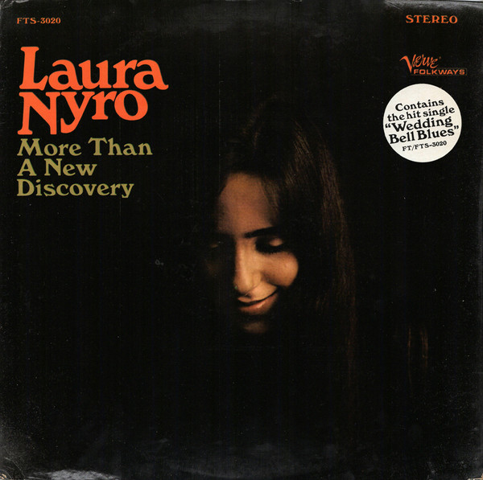

And When I Die
03 Jun 2021 · 5 min read
topics: humanism

As children, our thoughts about death are stuff of dreams and fairy tales. As adults we learn to suppress these thoughts because we are busy getting on with things. But as teenagers, in this transition between nursery rhymes and real life, we tend to approach this topic with a frankness and curiosity that can be somewhat startling.
Laura Nyro wrote her song “And When I Die” at the age of 17, and her refreshing treatment of the subject shows none of the reverence or piety that we learn to adopt as adults.
Let’s look over her lyrics.
And when I die and when I’m dead, dead and gone,
There’ll be one child born and a world to carry on, to carry on.I’m not scared of dying and I don’t really care.
If it’s peace you find in dying, well, then let the time be near.
If it’s peace you find in dying, when dying time is here,
Just bundle up my coffin cause it’s cold way down there,
I hear that’s it’s cold way down there, yeah, crazy cold way down there.And when I die and when I’m gone,
There’ll be one child born and a world to carry on, to carry on.My troubles are many, they’re as deep as a well.
I can swear there ain’t no heaven but I pray there ain’t no hell.
Swear there ain’t no heaven and pray there ain’t no hell,
But I’ll never know by living, only my dying will tell,
Only my dying will tell, yeah, only my dying will tell.And when I die and when I’m gone,
There’ll be one child born and a world to carry on, to carry on.Give me my freedom for as long as I be.
All I ask of living is to have no chains on me.
All I ask of living is to have no chains on me,
And all I ask of dying is to go naturally, only want to go naturally.
Don’t want to go by the devil, don’t want to go by the demon,
Don’t want to go by Satan, don’t want to die uneasy,
Just let me go naturally.And when I die and when I’m gone,
There’ll be one child born, there’ll be one child born.
When I die, there’ll be one child born.
When I die, there’ll be one child born.
When I die, there’ll be one child born.
When I die, there’ll be one child born.
This song engendered lots of popular cover versions, but Nyro’s own recording is the unalloyed master from which all of the imperfect copies were made. Unlike some singer-songwriters of the sixties, Nyro’s voice, singing, playing and arrangements were more than the equal of those who popularized her songs, and there’s really no reason to seek them out until you’ve fully absorbed Nyro’s own version.
The music starts off in a dirge-like vein appropriate for a funeral, but then quickly shifts into an uptempo treatment full of liveliness and vitality, with Nyro’s voice alternately swooping and confiding, shivering and shouting, husky and full-throated, making it clear that, despite her topic, rigor mortis is nowhere near.
It’s easy to underestimate Nyro’s achievement here, especially in light of all the unavoidable cover versions of the song that tend to somewhat muddy the song’s impact. One can easily view this as sort of a youthful exploration of Nyro’s many emerging talents, but lacking any special coherence.
For me, though, this is an amazingly mature and prescient song for Nyro to have recorded in 1967. Think of it as a modern humanistic companion to John Donne’s famous sonnet, “Death, be not proud”; whereas Donne was reflecting on a supposed eternal life, Nyro makes the following points:
- Death is a natural, physical event, not a metaphysical one;
- Death deserves and will receive from her no special reverence;
- She has no interest in debating the existence of an afterlife;
- She’s happy to let others adopt whatever attitudes towards death they may prefer;
- All she asks is freedom to live and die by her own lights;
- If there is some sort of continuance of her own life after death, then it will take the form, not of some otherworldly existence, but of “one child born and a world to carry on.”
And then, to have wrapped all of these striking insights into a dizzying, horn-soaked, uplifting musical performance that leaves listeners happily humming along and tapping their feet, and that gets off the stage in roughly two-and-a-half minutes… it’s a remarkably mature and sophisticated achievement, for an artist of any age.
We might be tempted to think that these apparently humanistic themes in her song were merely accidental, or incidental to her motivations to write a hit song, but then Wikipedia informs us that Nyro credited the Sunday school at the New York Society for Ethical Culture with providing the basis of her education. This institution was – and still is – associated with a branch of humanism that maintains the importance of congregational structures, and so adopted many of the practices of traditional religions, but without a belief in any sort of god.
It may be helpful as well to note that Nyro’s later life and death did indeed mirror her words in this song. You can read more on Wikipedia.
Thanks for reading! If you’d like a convenient short URL to link to this piece, you can use pract.org/s/wid.html. Or feel free to simply share this piece using one of the social media buttons below!